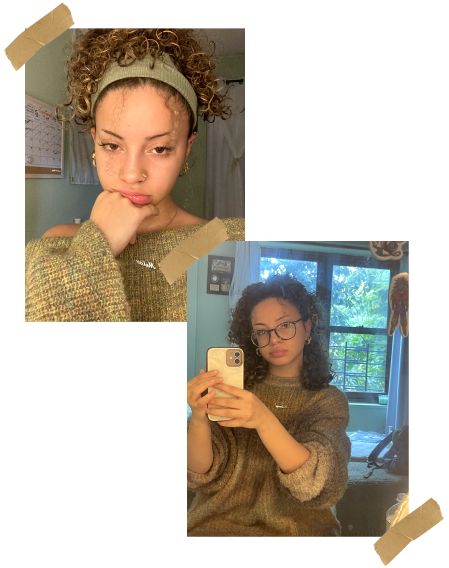
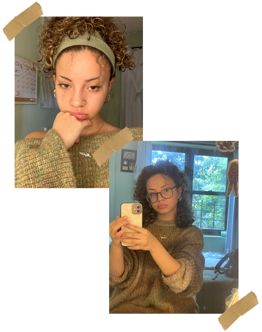
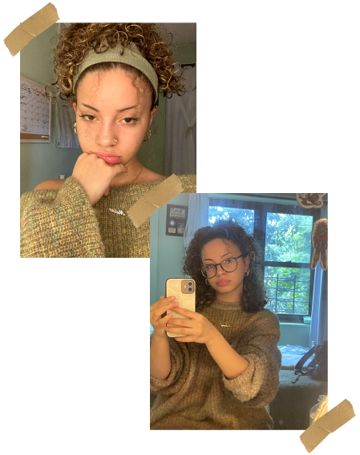
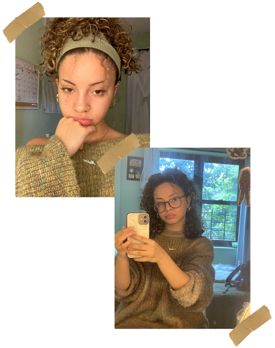

20 Years Old
Which leads us to today... this has been a fundamental year in terms of education. I've officially declared as a Graphic Design major, and although I'm behind, I've never felt more sure of my future.
The biggest lesson I’ve learned in my 20 years is that life is constantly evolving. Just when I thought I had things figured out, change always found its way in— sometimes for the better, sometimes not. Yet every shift brought me closer to who I am now: fulfilled, driven, and motivated to create a future that shines bright for both myself and my loved ones. Honestly, I’ve never felt more like me than I do at this very moment. And that’s the beauty of it— the journey is far from over. Who I am now could be completely different in a decade, and I’m excited to see how I grow.
Thank you for tuning in!